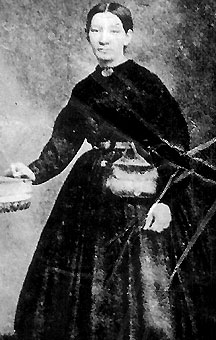

|

NAME: Sally Louisa Tompkins
BORN: 1833
DIED: 1916
ALLEGIANCE: Confederate
HIGHEST RANK: Captain
RECORD: Opened Robertson Hospital in Richmond,
Virginia, on August 1, 1861. Commissioned captain of cavalry
on September 9, 1861. Ceased operating the hospital on June
13, 1865.
|
|
Born into a wealthy and altruistic family in coastal Mathews
County, Virginia, in 1833, Sally Louisa Tompkins was
destined for a life of philanthropy. After moving to
Richmond, Tompkins spent much of her time and a considerable
portion of her fortune assisting causes she considered
worthy. With the onset of civil war, she labored tirelessly
on the behalf of the South's wounded soldiers, and for this
she became the first and only woman to receive an officer's
commission in the Confederate army.
After the First Battle of Bull Run in July 1861 left
northern Virginia littered with wounded, the fledgling
Confederate government pleaded with its citizens to open
their homes to the wounded. Tompkins was among the first to
respond. She sought help from her friend, Judge Robertson of
the Circuit Court of Richmond and Henrico County, and he
offered her his home at the comer of Third and Main Streets
in Richmond. At her own expense, Tompkins transformed the
house into a hospital, naming it in honor of the generous
judge. Tompkins's keen eye for detail and her obsession with
cleanliness made Robertson Hospital, which opened on August
1, one of the South's most vital institutions, and
Confederate authorities hurried their most desperate cases
to her.
Tompkins's reputation grew, and soon wounded Rebel soldiers,
calling her "the little lady with the milk-white hands,"
begged to be sent to her hospital. Soldiers of all ranks
proposed marriage to her. She turned them all down, saying,
"Poor fellows, they are not yet well of their fevers." She
never married.
Only a few weeks after the hospital opened, President
Jefferson Davis placed all Southern hospitals under the
control of the Confederate Medical Department. In
recognition of Tompkins's service, Davis commissioned her a
captain of cavalry on September 9. Flattered, Tompkins
refused all pay but accepted the rank because it enabled her
to obtain supplies far more easily than she would have as a
civilian. Her patients soon gave her the affectionate
nickname "Captain Sally."
Tompkins worked exhaustively until the hospital closed on
June 13, 1865, two months after Union soldiers had occupied
the Confederate capital. In four years as chief, Tompkins
had admitted 1,333 patients, losing just 73 of them, a
remarkable 94.5 percent survival rate. After the war,
Tompkins's continued philanthropy wiped out her fortune and
compelled her to enter Richmond's Home for Confederate
Women. She died in 1916 and was buried with full military
honors at Kingston Church in Mathews County. Years later,
two chapters of the United Daughters of the Confederacy were
named for her, the Confederacy's only woman officer.
Source: Civil War Times Illustrated
37:5 (October 1998), 88.
|